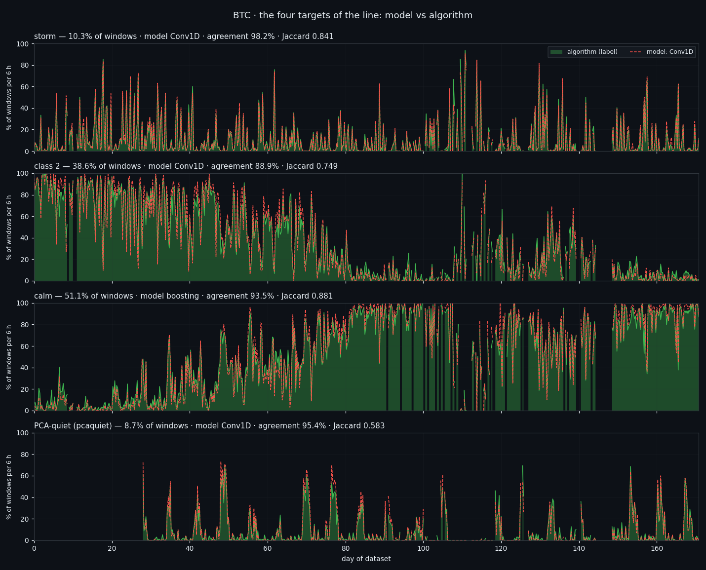
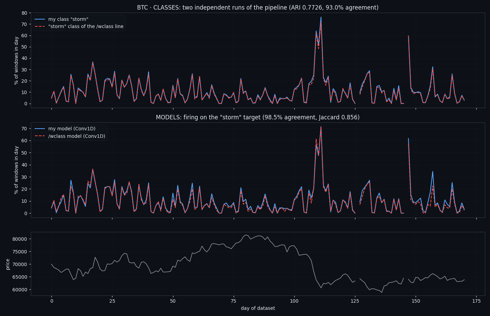
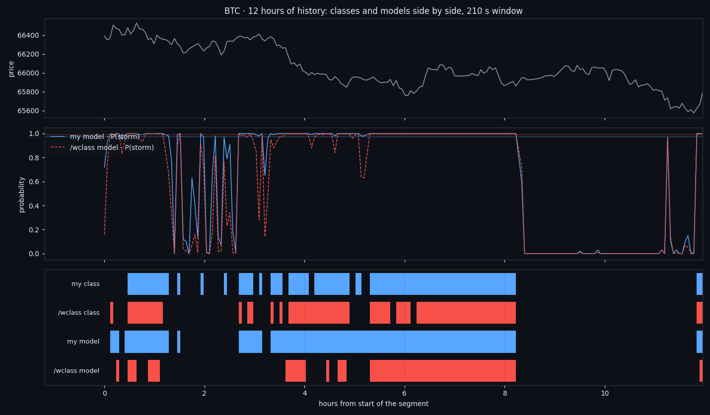
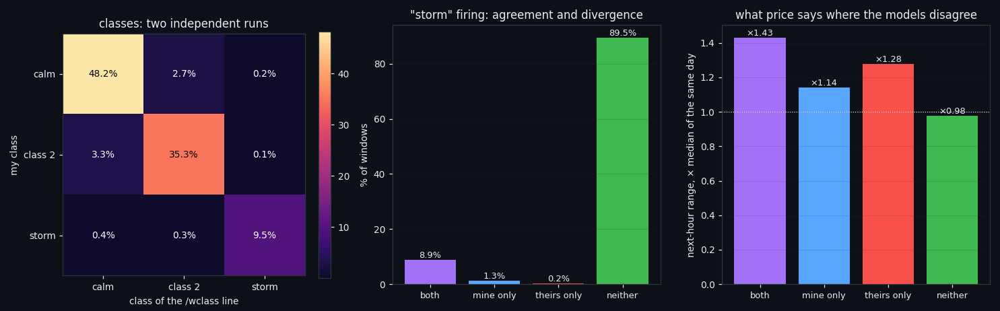

Four Market States, Found Twice by Two Independent Pipelines
Four market states, found twice by two pipelines that share no code. We wrote our research recipe down as an executable diary, then wrote a second implementation from that text alone — different seed, different block split, different network initialisation — and ran it over the same 54,764 windows of BTC order-book data. The states came back: 93.0% of windows landed in the same one (ARI 0.7726), and two independently trained detectors fire on the same 98.5% of windows. Where both fire, the next hour's price range is ×1.432 the median of the same day.
① The data both pipelines saw
Everything below runs on one input: per-second order-book features for a single coin — wall thickness, inflow and drain on each side, and executed buy/sell volume. Eight numbers a second, 171 days of BTC, cut edge to edge into windows of 210 seconds. That gives 54,764 windows, 47,183 for training and 5,394 for validation, split in two-hour blocks with a 30-minute embargo between them — neighbouring windows are correlated, and a naive random split would leak a window's neighbour into validation.
The rule that shapes the whole construction: a window is classified by its own 1,680 numbers and nothing else. No price, no time of day, no neighbouring windows, no rolling external norm. The only thing entering from outside is a scale constant computed on the training part. The next hour's price range is computed too, but it is an envelope opened after the state is already assigned — never an input.
18.4% of seconds are missing from the feed, so gaps are interpolated and any window with less than 95% real seconds is dropped. Two things were held identical between the two pipelines, both of them input/output rather than method: the CSV reader and the data boundary, so that both cut windows on exactly the same grid and a window-by-window comparison is possible at all. Everything arbitrary was changed: the seed (20260805 against 20260804), and with it the block split, the k-means initialisation, the fold assignment and every weight in the networks.
⑩ Four states: what the algorithm says, what the model says
The line trains four production targets, and this is all four of them on one shared time axis. Green is the state as the algorithm assigned it; red is the state as a model trained on that assignment reads it back out of the raw 8 × 210 matrix. The engine on each panel is whichever of the two won cross-validation on PR-AUC.
Storm — 10.3% of windows by the algorithm, 10.3% by the convolutional network, agreeing on 98.2% of windows (Jaccard 0.841). Class 2 — 38.6% against 38.5%, 88.9% agreement. Calm — 51.1% against 51.0%, 93.5%. PCA-quiet, the fourth and rarest target, defined only where a 28-day norm already exists (hence the empty first four weeks) — 8.7% against 8.6%, 95.4% agreement but a Jaccard of only 0.5828: on a rare target most of that agreement is both sides staying silent, which is why the pair of columns has to be read together.
Read this as a check that a model can recover the split from raw numbers, not as a forecast: these are production models, and 98% of the windows were in their training. The honest figures are the held-out 2%, cut as four contiguous chunks with an embargo — AUC 0.9976 and PR-AUC 0.9826 for storm, 0.9468 / 0.9589 for class 2, 0.964 / 0.9234 for calm, 0.9284 / 0.4812 for PCA-quiet.

⑪ Two independent runs across the whole history
The top panel is the storm state as each pipeline assigned it, day by day, over the full 171 days; the bottom panel is the two detectors firing. The two lines track each other closely enough that they are hard to tell apart, which is the result — the second pipeline never saw the first one's code, only the text of the diary.
In numbers: the states agree on 93.0% of 54,764 windows, ARI 0.7726. The shares match too — calm 51.1% against 51.9%, class 2 38.6% against 38.3%, storm 10.3% against 9.8%. Note that the raw cluster numbers agree far less (ARI 0.6702): k-means numbers its clusters however it likes, so the states must be named from the input side — by rank of total flow level — before anything is compared.

⑪ Twelve hours, window by window
Close up, on a slice of history at the natural resolution of the method: four rows — my state, their state, my model's probability, their model's probability — over the same 210-second windows.
This is the view where a replication either survives or falls apart, because agreement averaged over a day can hide two signals that fire at different moments. They don't: the two detectors light up on the same windows, with a Spearman correlation of 0.914 between their probabilities, Jaccard 0.856 and Cohen's κ 0.9141. Cross-wise it holds as well — my model against their state label agrees on 98.2% of windows, their model against mine on 97.8%.

⑪ Where the two runs disagree, and what price did next
The left half is the state matrix — my run's rows against the other run's columns, as a share of all windows. The diagonal holds 93.0% of them. The right half asks the question a single model cannot answer: what happens in the off-diagonal cells?
Where both detectors fire on storm — 8.9% of the time — the next hour's price range is ×1.432 the median of the same day (×1.865 in absolute terms, but the within-day correction is the honest one: without it you are measuring which month it is). Where only one fires, the edge mostly evaporates — ×1.143 for my model alone (1.3% of windows) and ×1.277 for theirs alone (0.2%). Where neither fires, ×0.976 — the market's own baseline. The useful object is not one detector's output; it is the region where two independently built detectors say the same thing.

Conclusion: the states are real, and we are going to use them
As we can see, the states are there. Two pipelines with nothing in common but a text file found the same four of them, in the same proportions, on the same windows — 93.0% agreement, ARI 0.7726 — and the detectors trained on those states by two different people-shaped processes fire together on 98.5% of the market's history. A structure that survives having its implementation thrown away and rewritten is a property of the order book, not of our code.
Two of the states are sharper than the others, and we say so plainly: the boundary between the quiet states is a cut through a continuum — they blend — while storm is the one that stays sharp under every control we throw at it, including the one that matters most, the within-day correction: ×1.401 the next-hour range of its own day (×1.761 absolute). That is the state worth building on.
So the work continues. Next we take these states out of the laboratory: a live detector reading the current window, agreement between two independent models as the actual trigger rather than one model's probability, and the same recipe run on the other five coins to see which parts travel. The full method — every command, every control, every tolerance and the complete code — is in the research diary of this replication, published alongside this article next to the diary of the original line it was written from. Run it on your own data and tell us what came back.
If this changed how you read the tape, the natural next step is Volume Is the Fuel — Not the Steering Wheel — We recorded the Binance order book every second for six coins over five months and ran eighteen tests on what volume really does.
Volume Is the Fuel — Not the Steering Wheel
We recorded the Binance order book every second for six coins over five months and ran eighteen tests on what volume really does.
About Market Research Lab — What We Collect and Why
Most market commentary is storytelling.
From Calm to Calm: a Standard for What Counts as a Signal (BTC)
We stopped defining market signals with a stopwatch.
The Wall That Goes Quiet: What Resting Liquidity Predicts
We measured resting limit liquidity sitting on both sides of the book second by second across six coins, and asked the only question that matters:….
Comments
Discussion is powered by GitHub. Enable it by adding secrets/giscus.json (repo IDs from giscus.app).